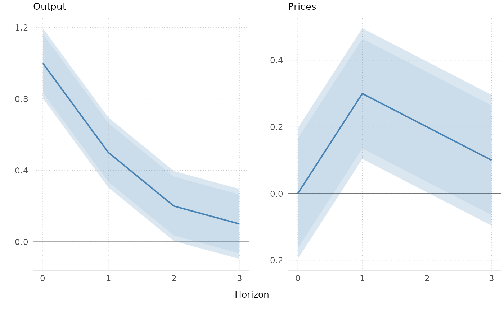

Arranges a list of IRF panels, as returned by plotirf() or plot2irf(),
into a grid with one figure per shock dimension and a common x-axis label.
Optionally saves each figure as a PDF.
Usage
arrangeirf(
myGraphs,
E,
N,
nRows,
xLab = "Horizon",
file = NA,
figScaleW = 3.5,
figScaleH = 2.5
)Arguments
- myGraphs
List of
ggplotobjects of lengthE * N, ordered by shock (outer loop) and then by variable (inner loop), as returned byplotirf()andplot2irf().- E
Integer. Number of shock dimensions (one figure per shock).
- N
Integer. Number of variables (panels per figure).
- nRows
Integer. Number of rows of panels in each figure. The number of columns is
ceiling(N / nRows).- xLab
Character. Common x-axis label printed below the panels.
- file
Character or
NA. If notNA, file path stem; figureeis saved aspaste0(file, "_", e, ".pdf"). IfNA(default), nothing is saved.- figScaleW
Numeric. Width of one panel column in inches.
- figScaleH
Numeric. Height of one panel row in inches. The saved figure has height
0.9 * nRows * figScaleH.
Value
Invisibly, a list of length E of arranged figures (gtable
objects), which can be redrawn with grid::grid.draw(). Each figure is
also drawn on the current graphics device as a side effect.
Examples
irf <- array(c(1, 0.5, 0.2, 0.1, 0, 0.3, 0.2, 0.1), dim = c(4, 2, 1))
dimnames(irf)[[1]] <- 0:3
se <- array(0.1, dim = dim(irf), dimnames = dimnames(irf))
g <- plotirf(irf, se, HTick = 1, Labels = c("Output", "Prices"))
figs <- arrangeirf(g, E = 1, N = 2, nRows = 1)
 # \donttest{
# Save to PDF (file is written as <stem>_1.pdf)
stem <- file.path(tempdir(), "irf")
arrangeirf(g, E = 1, N = 2, nRows = 1, file = stem)
# \donttest{
# Save to PDF (file is written as <stem>_1.pdf)
stem <- file.path(tempdir(), "irf")
arrangeirf(g, E = 1, N = 2, nRows = 1, file = stem)

# }